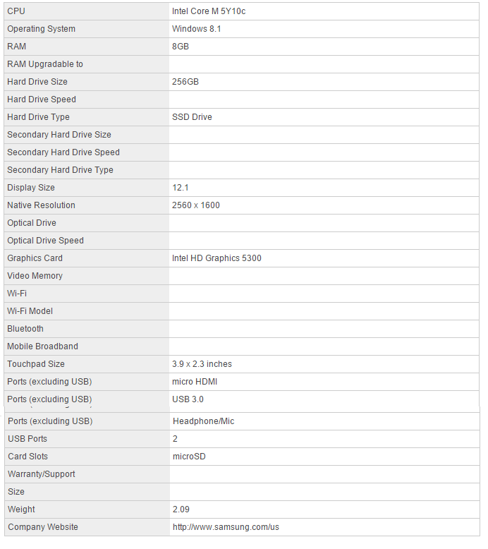
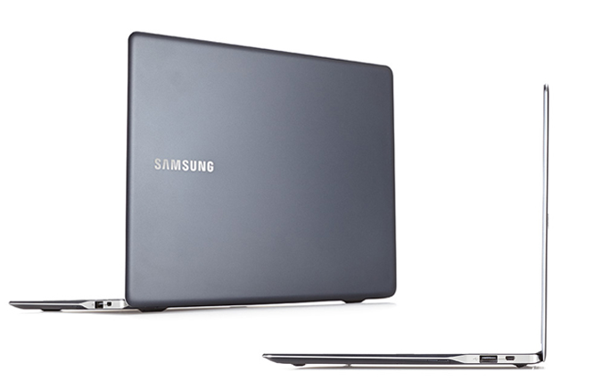
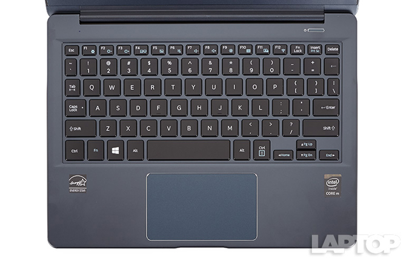
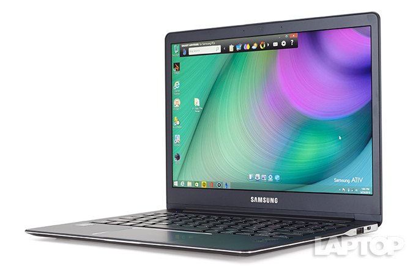

Laptop Lounge
Samsung Ativ Book 9 (2015) Review

Editor's Rating:
The Pros
Beautiful display; Thin and light design; Solid overall performance.
The Cons
Finicky touchpad; Short battery life
Verdict
The Samsung ATIV Book 9 is a compact laptop with a stunning display and good overall performance, but it suffers from short battery life
Specifications
Design
Small and stylish, the Samsung ATIV Book 9 is encased in Imperial Black aluminum, punctuated by a silver Samsung logo on the left side of the lid. It's smooth to the touch, but it picks up fingerprints after a while.
Thin, brushed metal strips accent the rims of the notebook's body and lid, giving the device an edgy feel. Samsung designed the ATIV Book 9 to be completely fanless, so that sleek, uninterrupted design carries through to the underside.
But even its good looks can't make up for how difficult it is to open the notebook. The indentation on the front of the ATIV Book 9's body isn't deep enough. I had to grab both the laptop's lid and the chassis and lift from the corner to get it open.
Measuring 11.19 x 8.37 x 0.46 inches and weighing just 2.09 pounds, the ATIV Book 9 is thin and light enough to stick in a bag and carry all day. It's more compact than the Asus Zenbook UX305 (12.7 x 8.9 x 0.48 inches, 2.64 pounds), the HP Elitebook Folio 1020 (12.2 x 8.27 x 0.62 inches, 2.68 pounds), the Dell XPS 13 (11.98 x 7.88 x 0.33-0.6 inches, 2.6 pounds) and the Apple MacBook Air (12.8 x 9 x 0.11-0.68 inches, just under 3 pounds). However, the new 12-inch Retina MacBook weighs just 2 pounds.
Keyboard
The keys on the Samsung ATIV Book 9 have a scalloped design, meaning they dip slightly in the middle. The keys have fairly average travel (1.4mm) but above average actuation (70 grams), which made typing easier. In the TypingTestOnline.Org test, I averaged 70 words per minute with a stellar 99 percent accuracy, which is the same as my average typing speed on my desktop.
However, sometimes the keyboard felt cramped because of the notebook's small size. Often I would hit the +/= key when reaching for the backspace key.
While the 3.9 x 2.3-inch touchpad is spacious and smooth, two-finger scrolling was hit or miss, leaving me to frustratingly swirl my fingers on the touchpad waiting for the cursor to move.
Display
The 12.2-inch, 2560 x 1600-resolution display on the Samsung ATIV Book 9 renders videos and photos beautifully. When I watched the trailer for Disney's Home, the bold and vibrant colors popped off the screen, and I could see every detail of Tip's flowing, curly locks. The ATIV Book 9 also offers wide viewing angles; I had to turn the display nearly 90 degrees before reflections obscured my view.
Not only is the screen colorful, but it's bright, too. At 303 nits, the ATIV Book 9 outshone the Asus ZenBook UX305 (281), the HP EliteBook Folio 1020 (224), the Dell XPS 13 (298) and Apple's MacBook Air (288). In Outdoor Mode, activated by pressing F9, the screen's brightness doubled, to a whopping 605 nits. The added brightness made watching videos outside on a sunny day much easier, although the sun's rays did cause inevitable glare on the screen.
Audio
The Samsung ATIV Book 9 comes with a Wolfson WM5102 UHQA lossless audio player and can pump out quality sound. Lenny Kravitz's "New York City" was clear and balanced as it filled my entire living room.
Bottom Line
The Samsung ATIV Book 9 is a stunning little notebook that embodies the word "ultraportable." It's attractive, has a beautiful display, and offers solid overall performance. Plus, this system offers more ports than the new MacBook. However, the relatively short battery life makes this system a tough sell for its $1,199 price.
For my money I prefer the $899 Dell XPS 13. While it has a lower-resolution screen and weighs half a pound more, it comes with a more powerful Core i5 processor and lasts nearly twice as long on a charge. Overall, the Samsung ATIV Book 9 looks and feels as premium as its price tag suggests, but it isn't the best value.